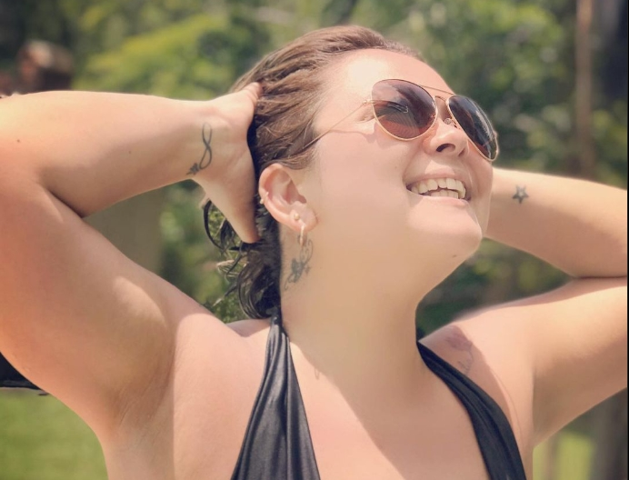

Sobre ela
Querida mãe, hoje é um dia especial para celebrar alguém tão extraordinária como você. Você é como o sol que ilumina nossos dias, sempre radiante e cheia de calor. Sua determinação é como uma força imparável, capaz de superar qualquer desafio que a vida apresente. Admiro profundamente sua resiliência e sua capacidade de florescer mesmo nos momentos mais difíceis. Seu amor incondicional é a âncora que nos mantém firmes e seguros. Você é o coração pulsante da nossa família, a fonte de inspiração de todos nós. Neste Dia das Mães, quero expressar toda a minha gratidão por você. Obrigado por ser a pessoa incrível que é, por nos ensinar com seu exemplo e por nos amar com tanta intensidade. Você é verdadeiramente excepcional. Te amo muito!
